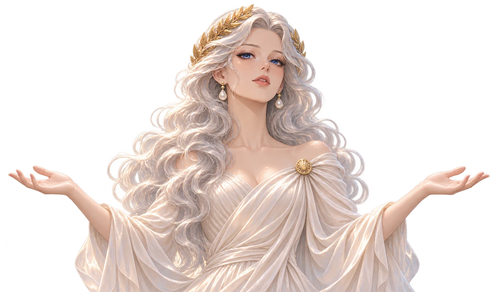
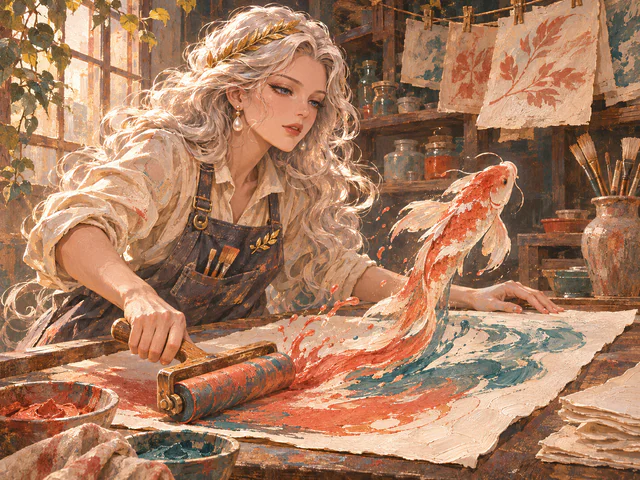
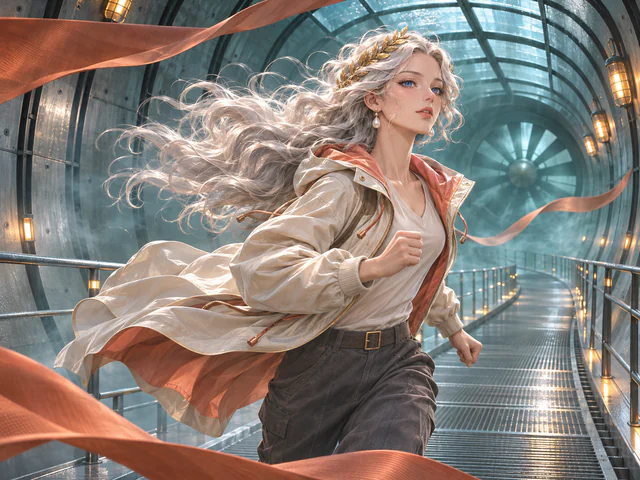
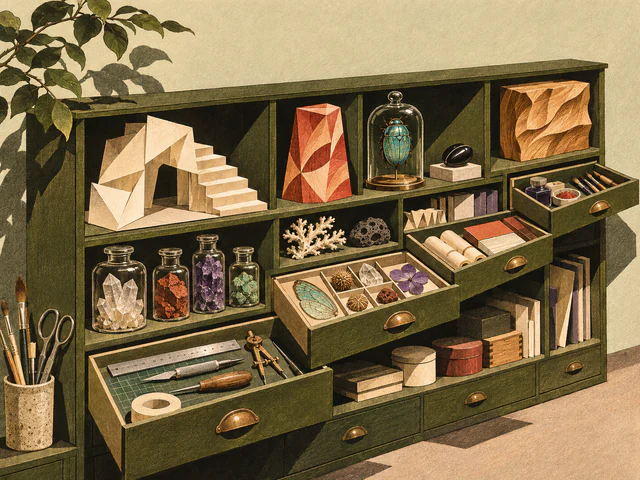
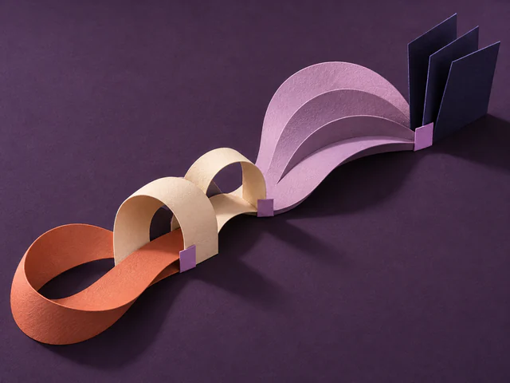
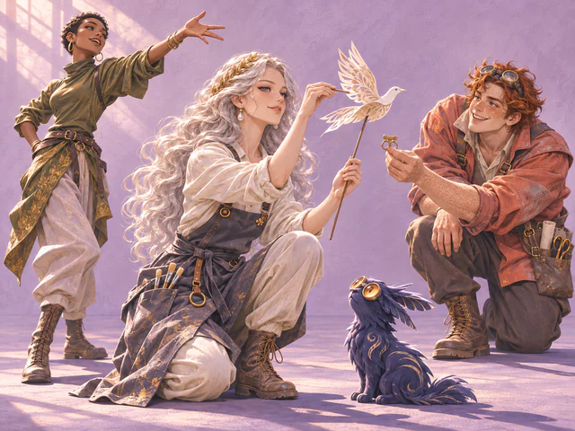
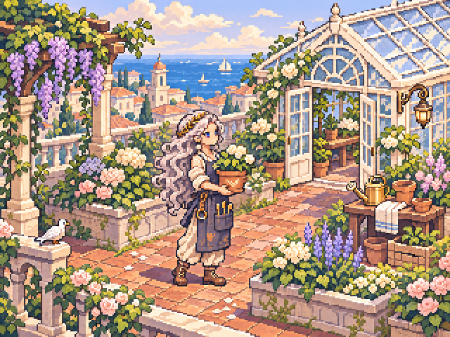
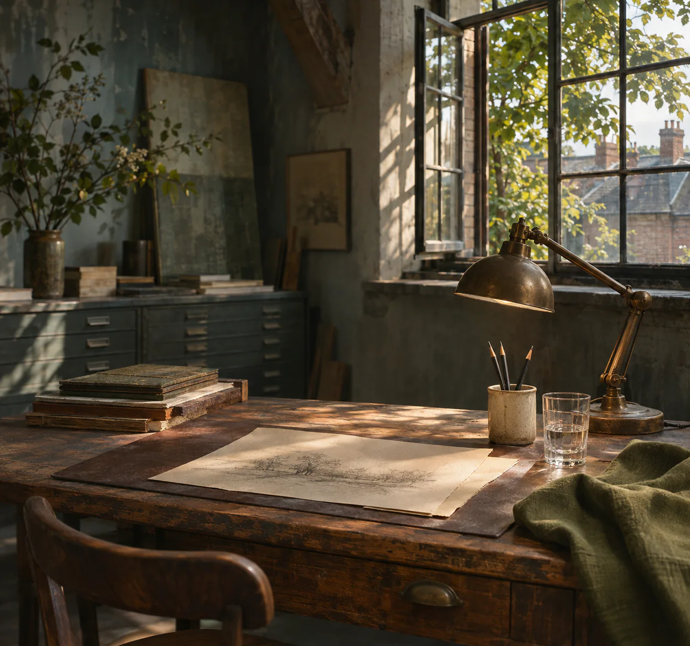
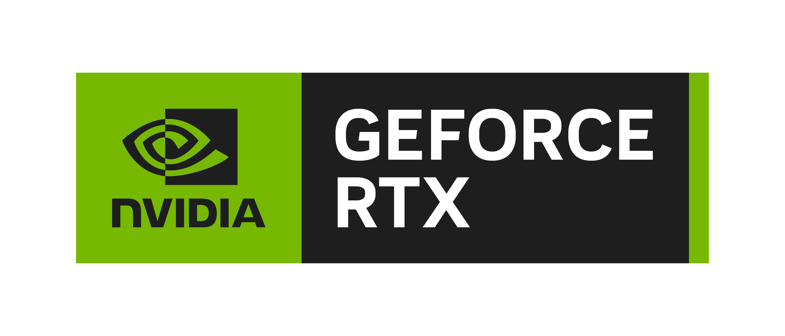
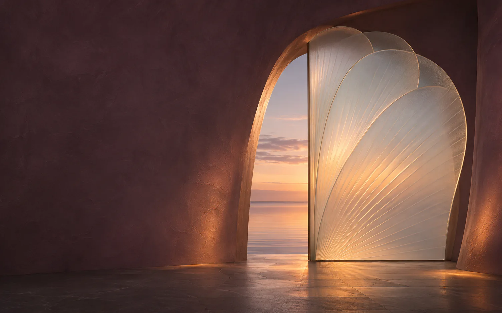

Your creative universe. One desktop application.
A local-first Windows desktop studio for AI image and video, model management, workflows, characters and pixel art. Connect your own ComfyUI.
The studios
Six worlds. One application.

-

Image Studio. Text-to-image, image-to-image, 4× upscaling, multi-LoRA stacks and live previews. SD 1.5, SDXL, Illustrious, Anima, Z-Image.
-

Video Studio. Native ComfyUI video workflows for Wan 2.1 and LTX-Video, with VRAM checks before a job. Wan 2.1, LTX-Video, local only.
-

Model Hub. A non-destructive local vault with Civitai discovery and Hugging Face import. Vault, Civitai, Hugging Face.
-

Workflow Management. Versioned ComfyUI templates with validation and one-click loading into Create. Validated templates, SD 1.5 and SDXL.
-

Character and Animation. Reusable identities, Story Canvas sequencing and a frame timeline for pixel animation. Characters, Stories, Frame timeline.
-

Pixel Studio. Seeded pixel art for characters, items, tilesets and effects, with sprite-sheet exports. PNG, sprite sheet, GIF/APNG, Godot, Unity, Phaser.
Local-first
Your machine. Your models. Your work.
KIREA talks to ComfyUI over loopback. The app, the queue, the prompts and the renders stay on your machine.
-
Privacy
Prompts, seeds, queue history and renders stay on your machine.
-
Ownership
Use the ComfyUI install and model folders you already have. Nothing is moved or rewritten.
-
Independence
No account, cloud queue or telemetry. Run the app on your own hardware.
Loopback only
· 127.0.0.1:8188

Requirements and download.
KIREA is a Windows desktop app. The 146 MB installer does not bundle Python, CUDA or model weights.
- Platform
- Windows 10 / 11 · 64-bit x64
- Reference GPU
-
RTX 4070 Ti SUPER · 16 GB VRAM
The verified runtime reference machine

- ComfyUI
- v0.37.0 or newer v0.45.2 verified with the current workflow set
- Engine setup
- Existing local install or managed runtime The managed runtime stays under your Windows app data
- Installer
- 146 MB · unsigned SHA-256 is published on the release page
- Models
- Not bundled Your vault and downloads need their own disk space
Memory Saver
Adds --lowvram, reduces latent dimensions, and surfaces low-VRAM
warnings. Best for 8–12 GB cards and smaller image or video jobs.
Image profiles scale automatically. Video may still need smaller dimensions.
Existing ComfyUI installs stay untouched. A managed runtime lives under your Windows app data.

Kirea Studio v1.0.1
Your universe, on your machine.
Windows 10/11 · x64 · 146 MB
Download for WindowsUnsigned installer. Verify the SHA-256 published on the release page before running.